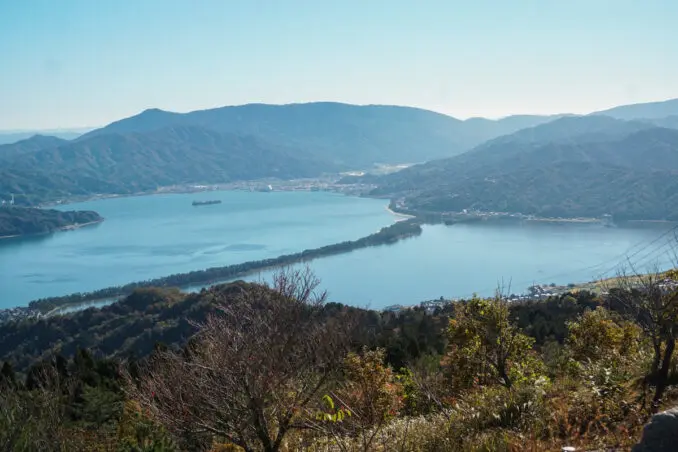
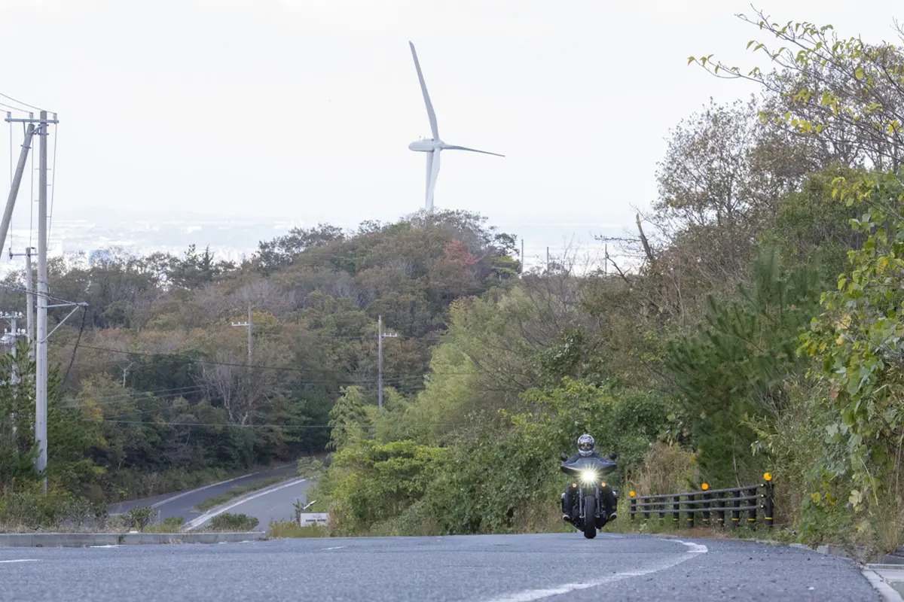
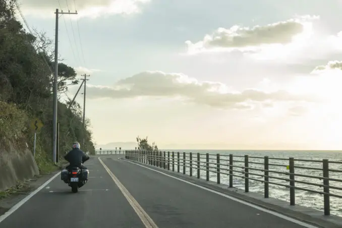

関西編 - ツーリングスポット
天橋立

美しい海と空が織りなす風光明媚な景色をバイクで爽快に楽しめる。
おすすめポイント:
- 夏には海水浴も楽しめるスポット。海岸線をバイクで走るのも爽快だ。
- 山頂からは天橋立を含む360度の大パノラマが広がる。道中のワインディングロードもツーリングに最適。
- 地元の食材を使った美味しい料理を楽しめるレストランやカフェがある。休憩や食事に最適。
アクセス情報:
- 住所: 京都府宮津市字文珠
- 最寄りIC: 京都縦貫自動車道 宮津天橋立IC
- 駐車場: 天橋立ビューランドの専用駐車場があり、無料で利用できる。
淡路島

美しい海岸線や豊かな自然、そして温泉やグルメスポットを巡る爽快なライドが楽しめる。
おすすめポイント:
- 海の絶景と潮風を感じながら爽快に走れるのが魅力。特に夕陽が沈む時間帯の景色は格別だ。
- 緑豊かな山々や花畑、広がる田園風景など、変化に富んだ自然景観を楽しめる。四季折々の風景も魅力の一つ。
- 島内の道路は整備が行き届いており、快適に走行できる。信号が少なく、交通量も少なめなのでストレスなくツーリングが楽しめる。
アクセス情報:
- 住所: 兵庫県淡路市
- 最寄りIC: 神戸淡路鳴門自動車道 淡路IC
- 駐車場: 無料駐車場あり(一部有料駐車場)
サンセットライン

夕陽に染まる美しい海岸線を爽快に走りながら絶景を楽しめる。
おすすめポイント:
- ライン沿いには美しい海岸線や景色が広がり、特に夕方の夕陽を眺めながらのドライブが人気。
- 徳島ラーメンをはじめとする地元の食文化が楽しめる飲食店が多数ある。
- 鳴門大橋展望台や大塚国際美術館など、観光スポットが点在し、多彩な楽しみ方ができる。
アクセス情報:
- 住所: 熊本県天草郡苓北町
- 最寄りIC: 南九州西回り自動車道 田浦IC
- 駐車場: 無料駐車場あり